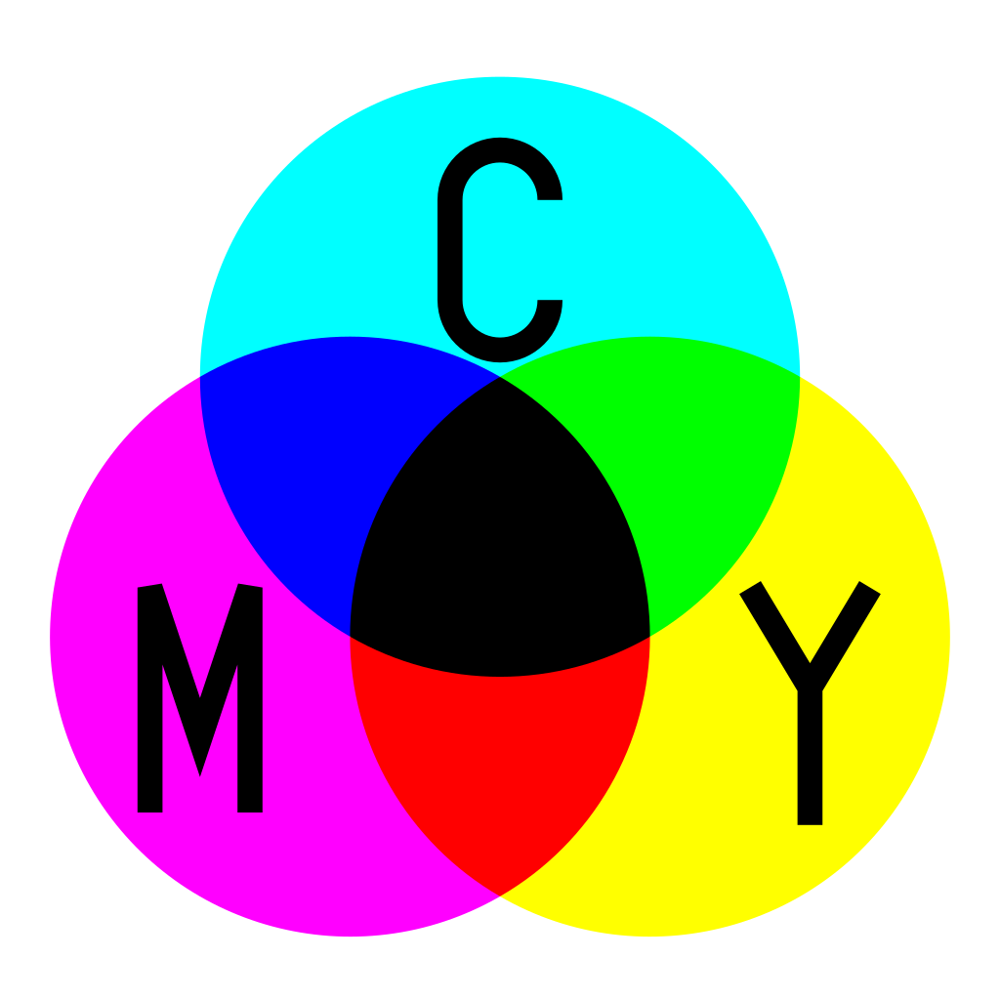
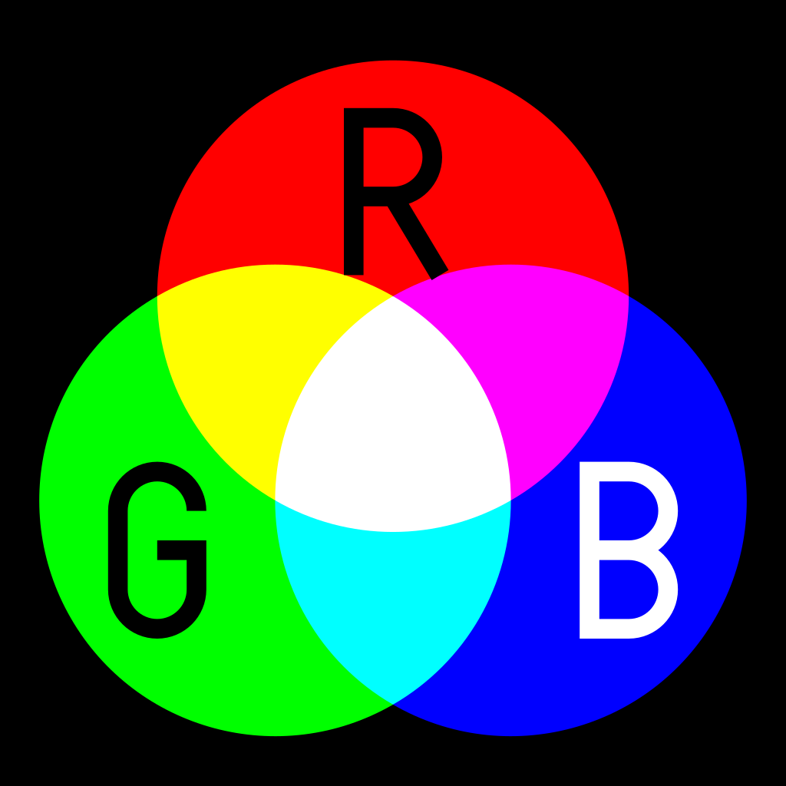
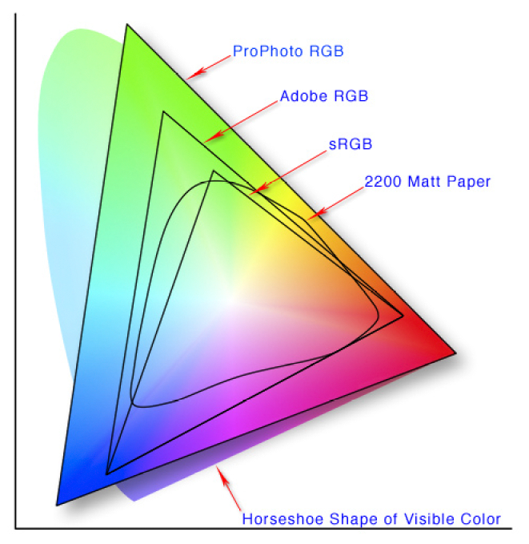

jsux - kmom02
Agenda
Färgmodeller
Color-picker
Färghjul och färgscheman
CSS custom properties
Färgmodeller
CMYK - Cyan Magenta Yellow blacK

RGB - Red Green Blue

16 miljoner-ish färgar
Färgar representeras med 3 kanaler: R G B
Antingen med rgb(254, 16, 168) eller #fe10a8
2563 = 256 * 256 * 256 ~ 16 miljoner

Color-picker
Ta färg från bild / logga.
Färghjul

Färgscheman
CSS custom properties
:root {
--color-primary: #65A6EB;
}
h1 {
color: var(--color-primary);
}The end
This is the end
Beautiful friend
This is the end
My only friend
The end